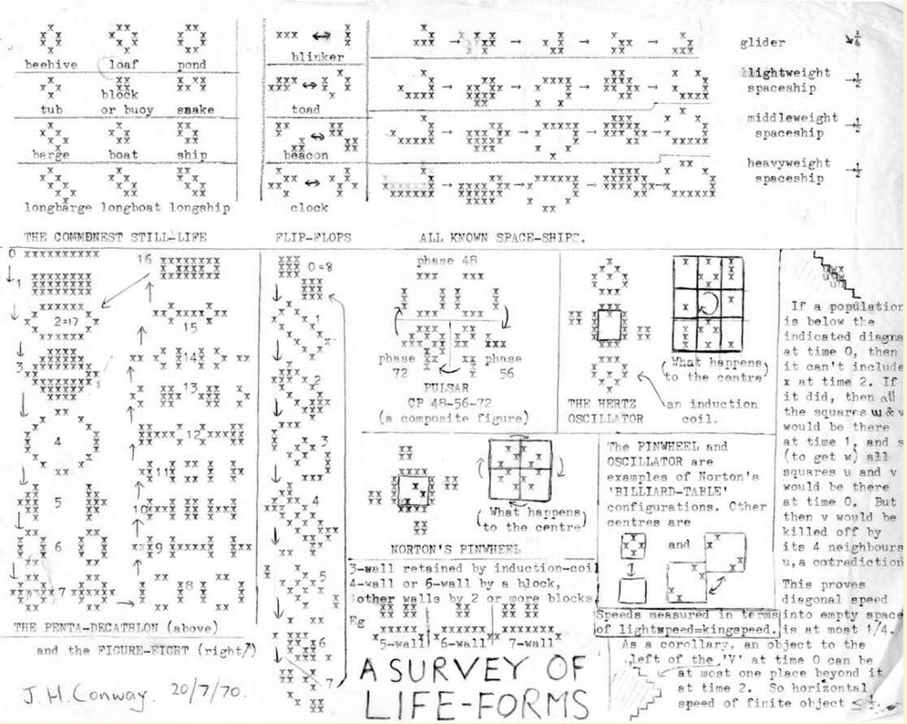
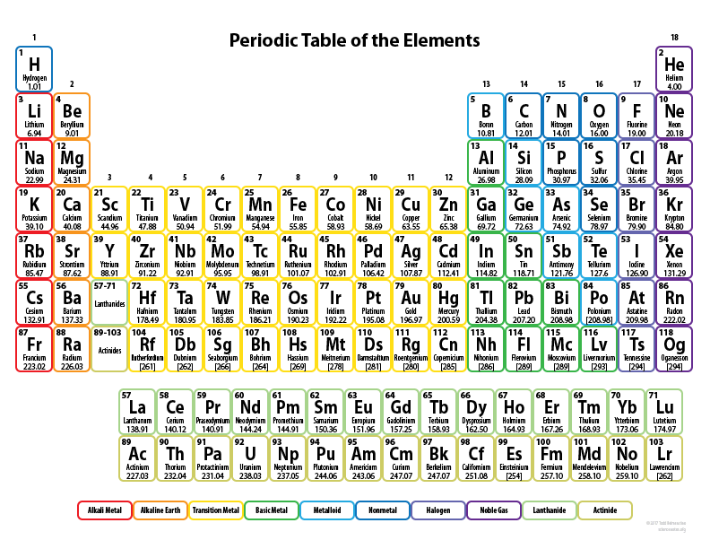

The Game of Life was invented in 1970 by the British mathematician John Horton Conway. Conway developed an interest in a problem which was made evident in the 1940’s by mathematician John von Neumann, who aimed to find a hypothetical machine that had the ability to create copies of itself and was successful when he discovered a mathematical model for such a machine with very complicated rules on a rectangular grid. Thus, the Game of Life was Conway’s way of simplifying von Neumann’s ideas. It is the best-known example of a cellular automaton which is any system in which rules are applied to cells and their neighbors in a regular grid. Martin Gardner popularized the Game of Life by writing two articles for his column “Mathematical Games” in the journal Scientific American in 1970 and 1971.

Music is an art form and cultural activity whose medium is sound organized in time.
Phenomenal milky way galaxy.
Periodic Table of Elements
Atom